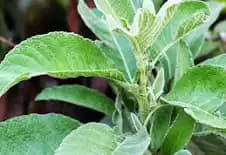

Uses & Preparation:
• Diarrhea – Chop leaves and boil in a glass of water for 15 minutes. Drink one part every 3 hours.
• Anti-edema, diuretic, anti-urolithiasis – Boil chopped leaves in a glass of water for 15 minutes until one glassful remains. Divide decoction into 3 parts, drink one part 3 times a day.